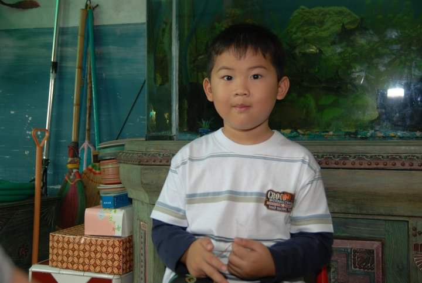

Co-founder, Cultivator
Product requirements, farmer validation, pilot planning, partnerships, and translating sensing technology into useful equipment-health alerts.
National Champion · Hult Prize TaiwanBASED IN HSINCHU · MADE OF CURIOSITY
Engineer. Storyteller.
A “what if?” kind of person.
I connect circuits, people, and ideas.
Sometimes that starts at a workbench.
Sometimes it starts with a really good story.
01 / THINGS I’VE PUT INTO THE WORLD
From a noisy signal to a useful insight.
From “could we?” to “let’s build it.”
Here’s a little of what that looks like.

curious since day one.Same curiosity.
A few more tools now.
02 / THE HUMAN BEHIND THE PROJECTS
I’m Jason — an Indonesian engineering student in Taiwan, a co-founder, and someone who likes making complicated things feel a little more human.
I study Electrical Engineering and Computer Science at National Tsing Hua University. My work takes me from embedded systems and power electronics to conversations with farmers about what actually helps in the field.
I also care about how an idea is told. Through media, event documentation, pitches, and community work, I’ve learned that a working prototype and a story people understand belong together.
The professional version, on LinkedIn ↗03 / A FEW CHAPTERS SO FAR
Product requirements, farmer validation, pilot planning, partnerships, and translating sensing technology into useful equipment-health alerts.
National Champion · Hult Prize TaiwanPlanning, documenting, and telling the stories behind community events. Used membership and social-media data to improve outreach.
Coaching, communicating with parents, and helping a growing group of students find their confidence.
B.S. studies in embedded systems, machine learning, power electronics, statistics, and signals and systems. GPA: 3.7/4.3, as recorded in my July 2026 engineering CV.
04 / AWAY FROM THE WORKBENCH
Field notes, people, and the moments
between the polished slides.
A LITTLE PROOF OF THE JOURNEY
Hult Prize Taiwan, 2026.
A team, a pitch, and a lot of work
that happened before the stage.
Original moments from the Hult Prize Taiwan national competition.
05 / YOU’VE SCROLLED. NOW MAKE SOMETHING.
Because a portfolio can be
a place to play, too.
Slide the phase offset and watch two triangle waves add together. At half a cycle, the ripples cancel.
An idealized illustration inspired by my buck-converter project. Real hardware also depends on duty cycle, components, and control.
Draw it. Scribble it. Make a beautiful mess.
Just for you. Your doodle stays in this tab until you save it.
06 / THE NEXT GOOD THING STARTS WITH A HELLO
A project, a collaboration, or an interesting conversation.
I’d love to hear what you’re thinking.